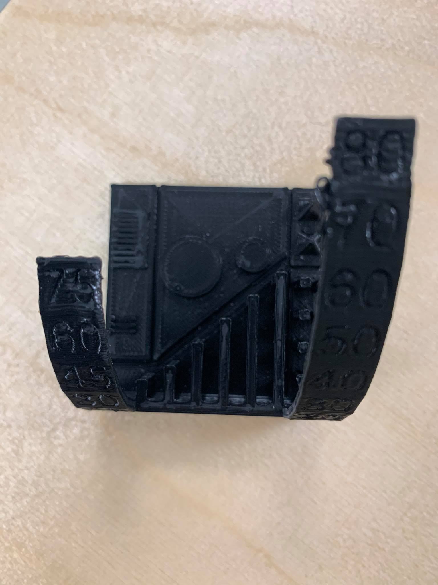

Verkefni3: Hópaverkefni
Hópverkefnishluti verkefnis 3 var að prenta prufu og ákvarða hönnunarreglur og -þvinganir. Vegna þess hver mikil aðsókn var í 3D prentara sameinaðist hópurinn við annan hóp og notaði sömu prufuna, og prentuðu allir meðlimir hópanna sín verkefni úr sama prentara. Hópurinn ákvað að notast við prentarann “Ultimaker Extended”.
Hér að neðan má sjá mynd af prufunni sem prentuð var út. Módelinu var hlaðið niður á netinu en það má finna hér.
Það sem prufan gaf til kynna er nákvæmni prentunarinnar. Það sem gagnlegt er að skoða er til dæmis hversu mikill halli má vera til staðar áður en stuðningi er bætt við. Hér að neðan má sjá prufuna, eftir að hún var prentuð út. Á henni má sjá að um 60° halla þarf að bæta stuðningi inn.

Á stillingunum má sjá að Support Overhang Angle er stillt á 60, svo að stuðningurinn kemur inn við þann halla.
Tolerance testið gefur til kynna að prentarinn hefur tök á því að prenta niður í 0,4mm frístandandi, en eftir því sem það minnkaði varð engin almennileg prentun.
Bilin sem tókst vel að prenta í tolerance testinu eru allt niður í 0,25mm en þegar bilið varð enn mjórra en það þá rann prentunin mikið saman. Þó voru engin bilanna sem prentuðust með skörpum hornum. Þetta gefur góða mynd af þeirri nákvæmni sem prentarinn býður upp á.
Á stillingunum má sjá að Support Overhang Angle er stillt á 60, svo að stuðningurinn kemur inn við þann halla.
Þessar þvinganir er gott að hafa í huga við gerð einstaklingsverkefnisins, bæði við hönnun og prentun.